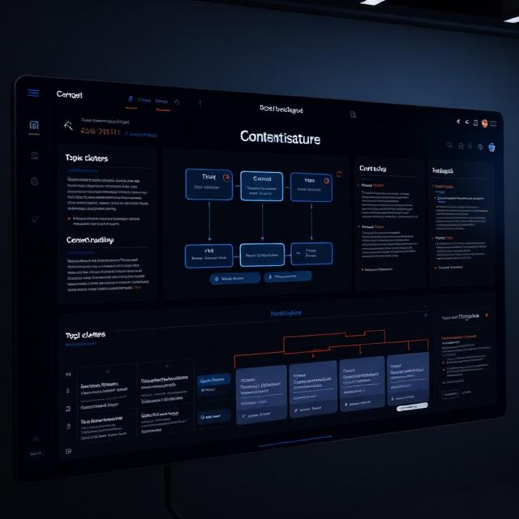

خدمات تخصصی دکتر سایت برای رشد ارگانیک و پایدار
این خدمات برای کسبوکارهای در حال رشد و برندهایی طراحی شدهاند که میخواهند
با تکیه بر تحلیل فنی، استراتژی محتوا و دادههای واقعی، مسیر رشد ارگانیک خود را بسازند.
🔍 آنالیز فنی سئو | Technical SEO Audit
آنالیز فنی سئو (Technical SEO Audit)
بررسی کامل ساختار سایت، Core Web Vitals، سرعت، مشکلات فنی، ساختار HTML، اسکیما، ریدایرکتها
و بهینهسازی کد برای درک بهتر گوگل از وبسایت شما و جلوگیری از افت رتبه ناگهانی.
 درخواست جزئیات و شروع آنالیز فنی
📑 استراتژی محتوا | Content Strategy
درخواست جزئیات و شروع آنالیز فنی
📑 استراتژی محتوا | Content Strategy
استراتژی محتوا (Content Strategy)
طراحی نقشه راه محتوا، خوشهبندی موضوعی، تحلیل رقبا، پیادهسازی اصول E‑E‑A‑T
و ساختاردهی محتوا برای رشد ارگانیک بلندمدت و تبدیل برند شما به مرجع تخصصی در حوزه فعالیتتان.

درخواست طراحی استراتژی محتوا
🤝 جلسات تخصصی تیمی | Consulting
جلسات تخصصی تیمی
جلسات منظم با تیم شما برای بررسی وضعیت سایت، تحلیل دادهها، تصمیمگیری،
اولویتبندی اقدامات و طراحی مسیر رشد، بهگونهای که تیم فنی، محتوا و مدیریت
در یک مسیر واحد و هدفمند حرکت کنند.
 رزرو جلسه تخصصی تیمی
رزرو جلسه تخصصی تیمی
این خدمات معمولاً در قالب یک مسیر مرحلهبهمرحله اجرا میشوند؛
ابتدا آنالیز فنی سئو، سپس طراحی استراتژی محتوا و در نهایت جلسات تخصصی تیمی
برای اجرای دقیق و پایدار تصمیمها. برای دریافت پیشنهاد اختصاصی، از طریق بخش ارتباط در صفحه اصلی پیام ارسال کنید.